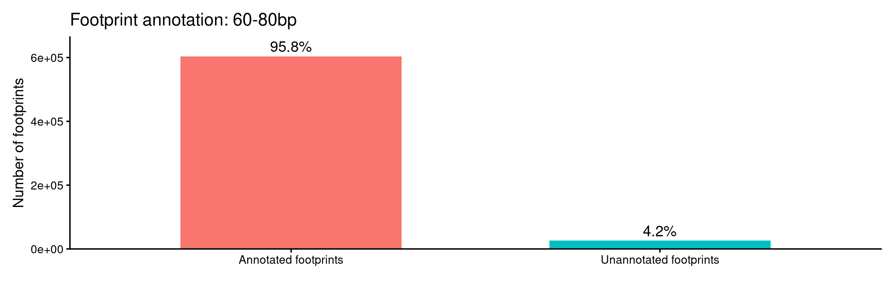
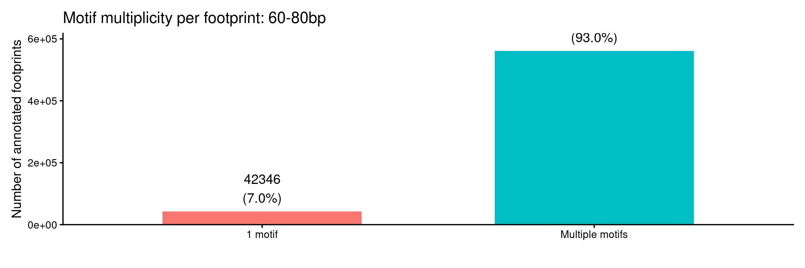
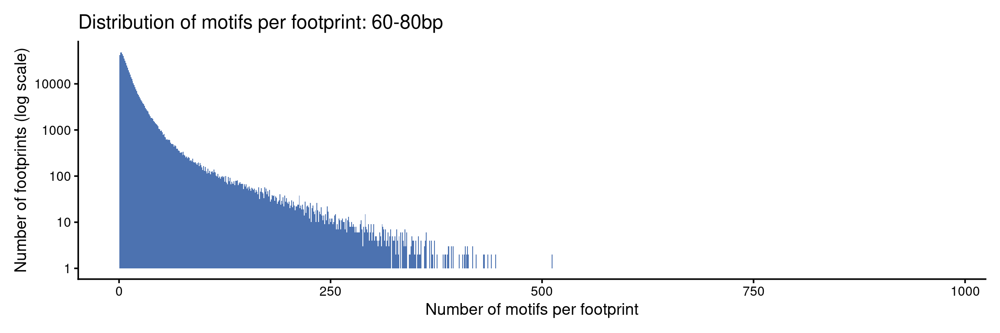
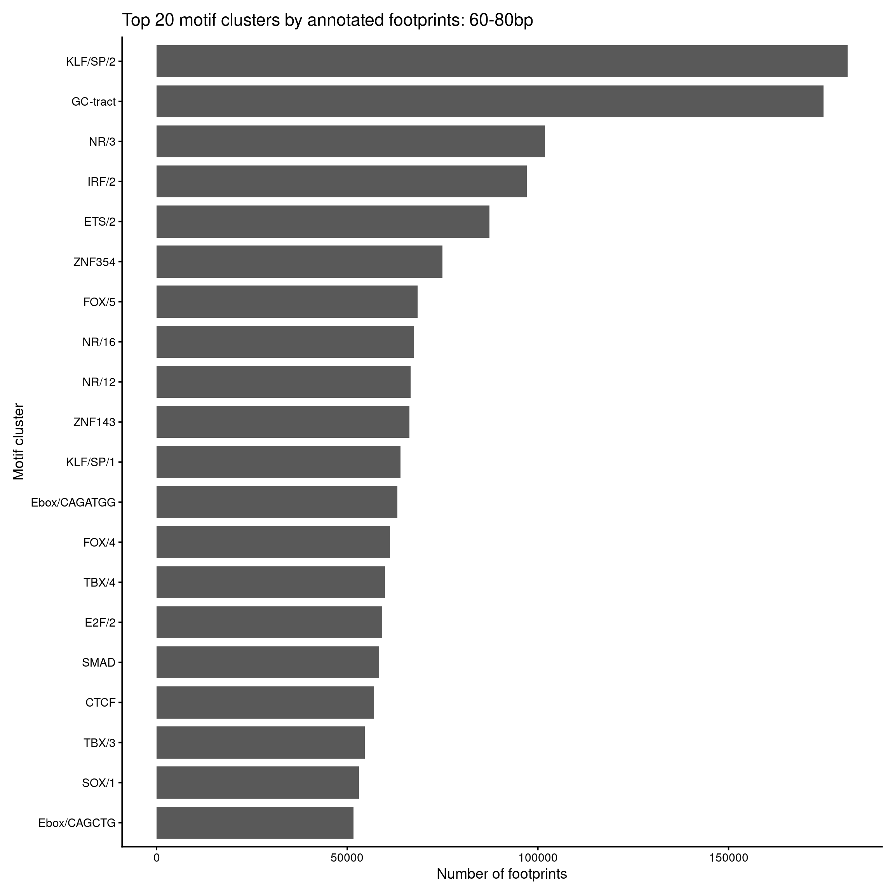

Last updated: 2026-03-12
Checks: 6 1
Knit directory: fiberseq/
This reproducible R Markdown analysis was created with workflowr (version 1.7.0). The Checks tab describes the reproducibility checks that were applied when the results were created. The Past versions tab lists the development history.
The R Markdown is untracked by Git. To know which version of the R
Markdown file created these results, you’ll want to first commit it to
the Git repo. If you’re still working on the analysis, you can ignore
this warning. When you’re finished, you can run
wflow_publish to commit the R Markdown file and build the
HTML.
Great job! The global environment was empty. Objects defined in the global environment can affect the analysis in your R Markdown file in unknown ways. For reproduciblity it’s best to always run the code in an empty environment.
The command set.seed(20250831) was run prior to running
the code in the R Markdown file. Setting a seed ensures that any results
that rely on randomness, e.g. subsampling or permutations, are
reproducible.
Great job! Recording the operating system, R version, and package versions is critical for reproducibility.
Nice! There were no cached chunks for this analysis, so you can be confident that you successfully produced the results during this run.
Great job! Using relative paths to the files within your workflowr project makes it easier to run your code on other machines.
Great! You are using Git for version control. Tracking code development and connecting the code version to the results is critical for reproducibility.
The results in this page were generated with repository version aa24992. See the Past versions tab to see a history of the changes made to the R Markdown and HTML files.
Note that you need to be careful to ensure that all relevant files for
the analysis have been committed to Git prior to generating the results
(you can use wflow_publish or
wflow_git_commit). workflowr only checks the R Markdown
file, but you know if there are other scripts or data files that it
depends on. Below is the status of the Git repository when the results
were generated:
Untracked files:
Untracked: analysis/annotation_by_location_motif_cluster.Rmd
Unstaged changes:
Modified: analysis/index.Rmd
Note that any generated files, e.g. HTML, png, CSS, etc., are not included in this status report because it is ok for generated content to have uncommitted changes.
There are no past versions. Publish this analysis with
wflow_publish() to start tracking its development.
library(ggplot2)
library(data.table)
library(patchwork)
#fp_lengths <- c("10-30bp", "30-60bp", "60-80bp")
fp_lengths <- c("60-80bp")
fp_length <- "60-80bp"
base_out_dir <- "/project/spott/xsun/fiberseq/2.annotating_footprints/results/annotate_fp_motif/motif_annotation"This analysis aimed to annotate Fiber-seq footprints with known motif
clusters from the Vierstra motif clustering resource
(/project/spott/kevinluo/Fiber_seq/data/motifs/Vierstra_motif_clustering/hg38.archetype_motifs.v1.0.bed.gz,
collected by Kevin).
The workflow consisted of two major stages:
bedtools./project/spott/xsun/fiberseq/2.annotating_footprints/13.motif_cluster_by_chr.sbatch
/project/spott/xsun/fiberseq/2.annotating_footprints/14.fp_overlap_motifcluster.sbatch
/project/spott/xsun/fiberseq/2.annotating_footprints/15.run_fp_motif_overlap_by_chr.sbatch
/project/spott/xsun/fiberseq/2.annotating_footprints/16.submit_fp_motif_overlap_jobs.sh
The footprint size bins analyzed were:
10-30bp30-60bp60-80bpTo keep only reasonably motif matches, overlaps were filtered by requiring at least 5 bp overlap:
The processed overlaps are storaged here:
/project/spott/xsun/fiberseq/2.annotating_footprints/results/annotate_fp_motif/motif_annotation/
Taking the footprints in 60-80bp as an example
annotate_fp_motif.filtered_overlap.RDS &
annotate_fp_motif.filtered_overlap.tsv.gz: full filtered
overlap table after applying overlap_bp >= min_overlap (5bp)
zcat /project/spott/xsun/fiberseq/2.annotating_footprints/results/annotate_fp_motif/motif_annotation/60-80bp/annotate_fp_motif.filtered_overlap.tsv.gz | head
fp_chr fp_start fp_end fp_name fp_strand fp_foldenrichment fp_log10pValue fp_log10qValue motif_chr motif_start motif_end motif_cluster match_score motif_strand best_model num_models overlap_bp
chr1 10464 10533 combined_all_chrs_60-80bp_macs3_q0.1_maxgap1_peak_1 . 4.24116 7.07988 4.03912 chr1 10482 10499 KLF/SP/2 13.0016 - SP3_HUMAN.H11MO.0.B 14 17
chr1 10464 10533 combined_all_chrs_60-80bp_macs3_q0.1_maxgap1_peak_1 . 4.24116 7.07988 4.03912 chr1 10502 10518 NR/16 11.5888 - THA_HUMAN.H11MO.0.C 13 16
chr1 10464 10533 combined_all_chrs_60-80bp_macs3_q0.1_maxgap1_peak_1 . 4.24116 7.07988 4.03912 chr1 10486 10503 KLF/SP/2 11.2207 - SP2_HUMAN.H11MO.0.A 9 17
chr1 10464 10533 combined_all_chrs_60-80bp_macs3_q0.1_maxgap1_peak_1 . 4.24116 7.07988 4.03912 chr1 10480 10489 MBD2 11.1198 - MBD2_HUMAN.H11MO.0.B 2 9
chr1 10464 10533 combined_all_chrs_60-80bp_macs3_q0.1_maxgap1_peak_1 . 4.24116 7.07988 4.03912 chr1 10489 10509 GC-tract 10.5797 - THAP1_HUMAN.H11MO.0.C 1 20
chr1 10464 10533 combined_all_chrs_60-80bp_macs3_q0.1_maxgap1_peak_1 . 4.24116 7.07988 4.03912 chr1 10510 10530 GC-tract 10.5313 - ZSC22_HUMAN.H11MO.0.C 1 20
chr1 10464 10533 combined_all_chrs_60-80bp_macs3_q0.1_maxgap1_peak_1 . 4.24116 7.07988 4.03912 chr1 10472 10486 CTCF 10.298 - CTCF_MOUSE.H11MO.0.A 5 14
chr1 10464 10533 combined_all_chrs_60-80bp_macs3_q0.1_maxgap1_peak_1 . 4.24116 7.07988 4.03912 chr1 10478 10495 KLF/SP/2 10.1838 - SP3_HUMAN.H11MO.0.B 6 17
chr1 10464 10533 combined_all_chrs_60-80bp_macs3_q0.1_maxgap1_peak_1 . 4.24116 7.07988 4.03912 chr1 10472 10492 GC-tract 10.1658 + THAP1_HUMAN.H11MO.0.C 1 20annotate_fp_motif.top1.RDS &
annotate_fp_motif.top1.tsv.gz : keep only the best motif
per footprint (based on match_score).
zcat /project/spott/xsun/fiberseq/2.annotating_footprints/results/annotate_fp_motif/motif_annotation/60-80bp/annotate_fp_motif.top1.tsv.gz | head
fp_chr fp_start fp_end fp_name fp_strand fp_foldenrichment fp_log10pValue fp_log10qValue motif_chr motif_start motif_end motif_cluster match_score motif_strand best_model num_models overlap_bp
chr1 10464 10533 combined_all_chrs_60-80bp_macs3_q0.1_maxgap1_peak_1 . 4.24116 7.07988 4.03912 chr1 10482 10499 KLF/SP/2 13.0016 - SP3_HUMAN.H11MO.0.B 14 17
chr1 15143 15173 combined_all_chrs_60-80bp_macs3_q0.1_maxgap1_peak_2 . 2.86428 4.07267 1.62783 chr1 15135 15148 DMRT1 9.6864 - DMRTB_MOUSE.H11MO.0.C 2 5
chr1 17135 17189 combined_all_chrs_60-80bp_macs3_q0.1_maxgap1_peak_3 . 3.13611 5.37744 2.59731 chr1 17177 17197 ZNF335 8.1558 - ZN335_HUMAN.H11MO.0.A 2 12
chr1 19705 19778 combined_all_chrs_60-80bp_macs3_q0.1_maxgap1_peak_4 . 4.9345 13.3775 9.95773 chr1 19761 19777 IRF/2 10.1224 + BC11A_HUMAN.H11MO.0.A 5 16
chr1 19782 19845 combined_all_chrs_60-80bp_macs3_q0.1_maxgap1_peak_5 . 3.5939 7.56031 4.4826 chr1 19808 19817 SREBF1 10.7497 + SRBP2_HUMAN.H11MO.0.B 4 9
chr1 20929 20955 combined_all_chrs_60-80bp_macs3_q0.1_maxgap1_peak_6 . 2.87657 4.97791 2.26458 chr1 20944 20964 GC-tract 10.1726 + THAP1_HUMAN.H11MO.0.C 1 11
chr1 24972 25023 combined_all_chrs_60-80bp_macs3_q0.1_maxgap1_peak_7 . 2.67157 4.172 1.65792 chr1 24965 24979 HAND1 9.229 - HAND1_MOUSE.H11MO.0.C 1 7
chr1 29214 29241 combined_all_chrs_60-80bp_macs3_q0.1_maxgap1_peak_8 . 2.48365 3.47125 1.21956 chr1 29223 29240 KLF/SP/2 15.0018 - SP2_HUMAN.H11MO.0.A 23 17
chr1 29262 29283 combined_all_chrs_60-80bp_macs3_q0.1_maxgap1_peak_9 . 2.84902 4.5626 1.96491 chr1 29270 29287 KLF/SP/2 10.9992 - SP3_HUMAN.H11MO.0.B 16 13annotate_fp_motif.top5.RDS &
annotate_fp_motif.top5.tsv.gz : keep top 5 motifs per
footprint (based on match_score).
zcat /project/spott/xsun/fiberseq/2.annotating_footprints/results/annotate_fp_motif/motif_annotation/60-80bp/annotate_fp_motif.top5.tsv.gz | head
fp_chr fp_start fp_end fp_name fp_strand fp_foldenrichment fp_log10pValue fp_log10qValue motif_chr motif_start motif_end motif_cluster match_score motif_strand best_model num_models overlap_bp
chr1 10464 10533 combined_all_chrs_60-80bp_macs3_q0.1_maxgap1_peak_1 . 4.24116 7.07988 4.03912 chr1 10482 10499 KLF/SP/2 13.0016 - SP3_HUMAN.H11MO.0.B 14 17
chr1 10464 10533 combined_all_chrs_60-80bp_macs3_q0.1_maxgap1_peak_1 . 4.24116 7.07988 4.03912 chr1 10502 10518 NR/16 11.5888 - THA_HUMAN.H11MO.0.C 13 16
chr1 10464 10533 combined_all_chrs_60-80bp_macs3_q0.1_maxgap1_peak_1 . 4.24116 7.07988 4.03912 chr1 10486 10503 KLF/SP/2 11.2207 - SP2_HUMAN.H11MO.0.A 9 17
chr1 10464 10533 combined_all_chrs_60-80bp_macs3_q0.1_maxgap1_peak_1 . 4.24116 7.07988 4.03912 chr1 10480 10489 MBD2 11.1198 - MBD2_HUMAN.H11MO.0.B 2 9
chr1 10464 10533 combined_all_chrs_60-80bp_macs3_q0.1_maxgap1_peak_1 . 4.24116 7.07988 4.03912 chr1 10489 10509 GC-tract 10.5797 - THAP1_HUMAN.H11MO.0.C 1 20
chr1 15143 15173 combined_all_chrs_60-80bp_macs3_q0.1_maxgap1_peak_2 . 2.86428 4.07267 1.62783 chr1 15135 15148 DMRT1 9.6864 - DMRTB_MOUSE.H11MO.0.C 2 5
chr1 15143 15173 combined_all_chrs_60-80bp_macs3_q0.1_maxgap1_peak_2 . 2.86428 4.07267 1.62783 chr1 15142 15152 FOX/4 8.4046 + FOXP1_HUMAN.H11MO.0.A 1 9
chr1 15143 15173 combined_all_chrs_60-80bp_macs3_q0.1_maxgap1_peak_2 . 2.86428 4.07267 1.62783 chr1 15143 15152 RBPJ 8.3251 - RBPJ_MA1116.1 1 9
chr1 15143 15173 combined_all_chrs_60-80bp_macs3_q0.1_maxgap1_peak_2 . 2.86428 4.07267 1.62783 chr1 15162 15171 TFAP2/1 7.9443 - TFAP2C_TFAP_6 1 9A footprint is considered annotated if it has at least one motif passing the overlap filter.
p <- list()
for (fp_length in fp_lengths){
annotation_summary <- readRDS(paste0("/project/spott/xsun/fiberseq/2.annotating_footprints/results/annotate_fp_motif/motif_annotation/", fp_length, "/annotation_summary.RDS"))
df_plot <- data.table(
category = c("Annotated footprints", "Unannotated footprints"),
count = c(annotation_summary$annotated_footprints, annotation_summary$unannotated_footprints)
)
df_plot[, percent := count / sum(count) * 100]
p[[length(p)+1]] <- ggplot(df_plot, aes(x = category, y = count, fill = category)) +
geom_col(width = 0.6) +
geom_text(aes(label = sprintf("%.1f%%", percent)),
vjust = -0.4, size = 5) +
scale_y_continuous(expand = expansion(mult = c(0, 0.1))) +
theme_classic(base_size = 14) +
labs(
x = "",
y = "Number of footprints",
title = paste0("Footprint annotation: ", fp_length)
) +
theme(legend.position = "none")
}
wrap_plots(p)
This is summarized by counting how many motif hits are associated with each footprint.
p <- list()
for (fp_length in fp_lengths){
fp_dist_summary <- readRDS(paste0("/project/spott/xsun/fiberseq/2.annotating_footprints/results/annotate_fp_motif/motif_annotation/", fp_length, "/motifs_per_footprint_summary.RDS"))
plot_dt <- data.table(
category = c("1 motif", "Multiple motifs"),
count = c(
fp_dist_summary$footprints_with_1_motif,
fp_dist_summary$footprints_with_multiple_motifs
),
proportion = c(
fp_dist_summary$prop_with_1_motif,
fp_dist_summary$prop_with_multiple_motifs
)
)
p[[length(p)+1]] <- ggplot(plot_dt, aes(x = category, y = count, fill = category)) +
geom_col(width = 0.6) +
geom_text(
aes(label = sprintf("%d\n(%.1f%%)", count, proportion * 100)),
vjust = -0.3,
size = 5
) +
scale_y_continuous(expand = expansion(mult = c(0, 0.1))) +
theme_classic(base_size = 14) +
labs(
x = "",
y = "Number of annotated footprints",
title = paste0("Motif multiplicity per footprint: ", fp_dist_summary$fp_length)
) +
theme(legend.position = "none")
}
wrap_plots(p)
p <- list()
for (fp_length in fp_lengths){
distribution <- readRDS(paste0("/project/spott/xsun/fiberseq/2.annotating_footprints/results/annotate_fp_motif/motif_annotation/", fp_length, "/motifs_per_footprint_distribution.RDS"))
p[[length(p)+1]] <- ggplot(distribution, aes(x = n_motifs, y = N)) +
geom_col(width = 1, fill = "#4C72B0") +
scale_y_log10() +
theme_classic(base_size = 14) +
labs(
x = "Number of motifs per footprint",
y = "Number of footprints (log scale)",
title = paste0("Distribution of motifs per footprint: ", fp_dist_summary$fp_length)
)
}
wrap_plots(p)
For each motif cluster, the number of unique footprints containing that motif is counted.
top_n <- 20
p <- list()
for (fp_length in fp_lengths){
motif_fp_counts <- readRDS(paste0("/project/spott/xsun/fiberseq/2.annotating_footprints/results/annotate_fp_motif/motif_annotation/", fp_length, "/motif_footprint_counts.RDS"))
df_plot <- motif_fp_counts[order(-n_footprints)][1:top_n]
p[[length(p)+1]] <- ggplot(df_plot,
aes(x = reorder(motif_cluster, n_footprints), y = n_footprints)) +
geom_col(width = 0.8) +
coord_flip() +
theme_classic(base_size = 14) +
labs(
x = "Motif cluster",
y = "Number of footprints",
title = paste0("Top ", top_n, " motif clusters by annotated footprints: ", fp_length)
)
}
wrap_plots(p, ncol = 1)
For each motif cluster, the number of unique footprints containing that motif is counted:
motif_fp_counts <- readRDS(paste0("/project/spott/xsun/fiberseq/2.annotating_footprints/results/annotate_fp_motif/motif_annotation/60-80bp/motif_footprint_counts.RDS"))
DT::datatable(motif_fp_counts,caption = htmltools::tags$caption( style = 'caption-side: left; text-align: left; color:black; font-size:150% ;','60-80bp'),options = list(pageLength = 10) )
sessionInfo()R version 4.2.0 (2022-04-22)
Platform: x86_64-pc-linux-gnu (64-bit)
Running under: CentOS Linux 7 (Core)
Matrix products: default
BLAS/LAPACK: /software/openblas-0.3.13-el7-x86_64/lib/libopenblas_haswellp-r0.3.13.so
locale:
[1] C
attached base packages:
[1] stats graphics grDevices utils datasets methods base
other attached packages:
[1] patchwork_1.3.2.9000 data.table_1.14.2 ggplot2_4.0.0
loaded via a namespace (and not attached):
[1] Rcpp_1.0.12 highr_0.9 RColorBrewer_1.1-3 pillar_1.9.0
[5] compiler_4.2.0 bslib_0.3.1 later_1.3.0 jquerylib_0.1.4
[9] git2r_0.30.1 workflowr_1.7.0 tools_4.2.0 digest_0.6.29
[13] jsonlite_1.8.0 evaluate_0.15 lifecycle_1.0.4 tibble_3.2.1
[17] gtable_0.3.6 pkgconfig_2.0.3 rlang_1.1.2 cli_3.6.1
[21] rstudioapi_0.13 crosstalk_1.2.0 yaml_2.3.5 xfun_0.41
[25] fastmap_1.1.0 withr_2.5.0 dplyr_1.1.4 stringr_1.5.1
[29] knitr_1.39 htmlwidgets_1.5.4 generics_0.1.4 fs_1.5.2
[33] vctrs_0.6.5 sass_0.4.1 DT_0.22 tidyselect_1.2.0
[37] rprojroot_2.0.3 grid_4.2.0 glue_1.6.2 R6_2.5.1
[41] fansi_1.0.3 rmarkdown_2.25 farver_2.1.0 magrittr_2.0.3
[45] scales_1.4.0 promises_1.2.0.1 htmltools_0.5.2 dichromat_2.0-0.1
[49] httpuv_1.6.5 labeling_0.4.2 S7_0.2.0 utf8_1.2.2
[53] stringi_1.7.6